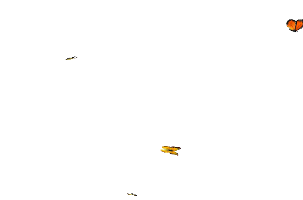

Menghan XiaResearcherShenzhen, Guangdong, China Email: menghanxyz@gmail.com
|
 |
Biography
I am now a researcher at Visual Computing Center of Tencent AI Lab. I obtained my Ph.D. degree from The Chinese University of Hong Kong(CUHK) in 2021, supervised by Prof. Tien-Tsin Wong.
Before that, I received the B.Eng. degree in Photogrammetry and Remote Sensing and M.Eng. degree in Pattern Recognition and Intelligent System
from Wuhan University in 2014 and 2017 respectively, under the supervision of Prof. Jian Yao.
My research interest includes computer vision, image processing, motion synthesis, with special emphasis on image/video enhancement, translation, and face animation.
Publication [Full list ]
✦ Conference
-
Deep Halftoning with Reversible Binary Pattern
Menghan Xia, Wenbo Hu, Xueting Liu, Tien-Tsin Wong.
IEEE International Conference on Computer Vision (ICCV), 2021.
-
Exploiting Aliasing for Manga Restoration
Minshan Xie*, Menghan Xia*, Tien-Tsin Wong.
IEEE Conference on Computer Vision and Pattern Recognition (CVPR), 2021.
-
Seamless Manga Inpainting with Semantics Awareness
Minshan Xie, Menghan Xia, Xueting Liu, Chengze Li, Tien-Tsin Wong.
SIGGRAPH (special issue of ACM Transactions on Graphics), 2021.
-
Mononizing Binocular Videos
Wenbo Hu, Menghan Xia, Chi-Wing Fu, Tien-Tsin Wong.
SIGGRAPH Asia (special issue of ACM Transactions on Graphics), 2020.
-
Colorblind-Shareable Videos by Synthesizing Temporal-Coherent Polynomial Coefficients
Xinghong Hu, Xueting Liu, Zhuming Zhang, Menghan Xia, Chengze Li, Tien-Tsin Wong.
SIGGRAPH Asia (special issue of ACM Transactions on Graphics), 2019.
-
Invertible Grayscale
Menghan Xia, Xueting Liu, Tien-Tsin Wong.
SIGGRAPH Asia (special issue of ACM Transactions on Graphics), 2018.
-
Color Consistency Correction Based on Remapping Optimization for Image Stitching
Menghan Xia, Jian Yao, Renping Xie, Mi Zhang, Jinsheng Xiao.
IEEE International Conference on Computer Vision Workshops (ICCVW), 2017.
-
Line-Based Multi-Label Energy Optimization for Fisheye Image Rectification and Calibration
Mi Zhang, Jian Yao, Menghan Xia, Kai Li, Yi Zhang, Yaping Liu.
IEEE Conference on Computer Vision and Pattern Recognition (CVPR), 2015.
✦ Journal
-
Jointly Optimizing Global and Local Color Consistency for Multiple Image Mosaicking
Li Li, Menghan Xia, Chi Liu, Liang Li, Hanyun Wang, Jian Yao.
ISPRS Journal of Photogrammetry and Remote Sensing (ISPRS). 170:45-56, 2020. -
A Closed-Form Solution for Multi-view Color Correction with Gradient Preservation
Menghan Xia, Jian Yao, Zhi Gao.
ISPRS Journal of Photogrammetry and Remote Sensing (ISPRS). 157:188-200, 2019.
-
Guided Color Consistency Optimization for Image Mosaicking
Renping Xie, Menghan Xia, Jian Yao, Li Li.
ISPRS Journal of Photogrammetry and Remote Sensing (ISPRS). 135:43-59, 2018. -
Globally Consistent Alignment for Planar Mosaicking via Topology Analysis
Menghan Xia, Jian Yao, Renping Xie, Li Li, Wei Zhang.
Pattern Recognition (PR). 66:239-252, 2017.
✧ Preprint
-
A Learned Compact and Editable Light Field Representation
Menghan Xia, Jose Echevarria, Minshan Xie, Tien-Tsin Wong.
Arxiv Tech Report, 2020. [arxiv] -
Enhance Convolutional Neural Networks with Noise Incentive Block
Menghan Xia, Yi Wang, Chu Han, Tien-Tsin Wong.
Arxiv Tech Report, 2020. [arxiv] -
Invertible Tone Mapping with Selectable Styles
Zhuming Zhang*, Menghan Xia*, Xueting Liu, Chengze Li, Tien-Tsin Wong.
Arxiv Tech Report, 2021. [arxiv]
Academic Services
- Conference Review: MMM20, CGI19-20, PG19, SIGGRAPH19, GMP20, IJCAI20, CVPR21-22, ICCV21, ECCV22.
- Journal Review: The Visual Computer, IEEE Access, TIP, TPAMI.
Selected Awards
- Outstanding Graduate Award (Postgraduate), Wuhan University, 2017.
- First-class Scholarship of Wuhan University, 2016.
- Microsoft Aerial Photogrammetry Scholarship, Wuhan University, 2015.
- Postgraduate Freshman Scholarship, Wuhan University, 2014.
- Outstanding Graduate Award (Undergraduate), Wuhan University, 2014.
- Outstanding Students Award, Wuhan University, 2012.
- Outstanding Students Award, Wuhan University, 2011.
|
|
 |